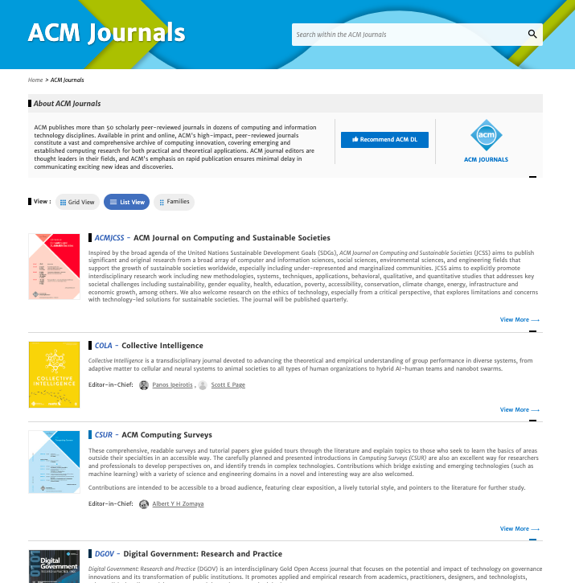

| A | B | C | D | E | F | G | H | I | J | K | L | M | N | O | P | Q | R | S | T | U | V | W | X | Y | Z | |
|---|---|---|---|---|---|---|---|---|---|---|---|---|---|---|---|---|---|---|---|---|---|---|---|---|---|---|
|
1
|
||||||||||||||||||||||||||
|
2
|
||||||||||||||||||||||||||
|
3
|
||||||||||||||||||||||||||
|
4
|
Editorial Website Competitive Analysis | |||||||||||||||||||||||||
|
5
|
||||||||||||||||||||||||||
|
6
|
ACM Digital Library (https://dl.acm.org/) | MIT Press (https://mitpress.mit.edu/) | Leonardo (https://leonardo.info/) | |||||||||||||||||||||||
|
7
|
General feeling of website | Pros | 1. Neat & clear indication of page scroll & navigation 2. Options to view journal, mazagines, books are on the top menu, well laid, and is consistent across all the pages. 3. Breadcrumb (eg: Home> Books) are present on each page which provide another way to know "where you are". 4. Filter option (filter via people, publications, publication date etc) along with pagination is present at collection level. |
1. Linear layout with less distractions. 2. Top level menu option with vertical display scrolls in most of its section. 3. Footer has detailed menu options under top level categories. 4. Author Guidelines and manuscripts have inline link to view pdf and also has a download button. 5. Since journal entry is vast, website doesnot list all the journal entries but instead shows a browse by list everytime. |
1. Top level menu with dropdown option along with search option. 2. Footer has detailed menu options under top level categories. 3. Breadcrumbs are present on some pages, some are without those. 4. Important information which needs attention is present on top of the menu bar. |
|||||||||||||||||||||
|
8
|
Cons | 1. Home page too lengthy 2. Only Header section and footer are of same style, everything in between is of different style and colour scheme. 3. Top level navigation option doesnot indicate the active page which you are on currently. 4. On clicking any other option (eg: Books, Journals) there are too many top level navigation bar which comes up. 5. Key information (eg: Guide to author, publication) is hard to find. Only footer has options which are a way to directly land on those pages. |
1. No indication of where one is after a link is clicked, the heading isnt
sufficient enough to provide that information. 2. Going to Books, or Journal redirects users to direct.mit.edu. and there is no way for users to go back to mitpress.mit.edu. |
1. No direct way to view articles from top menu. | ||||||||||||||||||||||
|
9
|
||||||||||||||||||||||||||
|
10
|
Information presentation on website | Website Features | 1. Basic & Advance search, search by Subject functionality to browse
through ACM Library. 2. Breadcrumbs on each page to display how page is navigating from the parent page. 3. Register button has different style as compared to other options on top menu. (this stands out making it more imp than others) 4. Footer has 4 sections with direct links : categories (includes journals, books, etc), About (includes about ACM library, author guidelines etc), Join (includes join ACM, subscribe etc), Connect (includes facebook, twitter etc) |
1. Search functionality on all the pages. 2. Top level menu with dropdown option to directly view all sub pages. 3. "Browse By" functionality is consistent and is added for books, journals, etc. 4. No Signup/ SignIn option is present for mitpress but is present for mitdirect. 5. Newsletter is a separate button added next to search icon on menu bar. 6. Footer section has elaborated links and topics which enables users to directly view those sections. |
1. Top level menu bar remain consistent for all page with search
functionality. 2. No signup/login option is present. |
|||||||||||||||||||||
|
11
|
Information Heirarcy | 1. Collection is given the first
importance. On Home page & on collection page, a summary of all collections are shown with title, a short
description, an image and a read more link. Clicking on the "read more link" of selected collection,
displays a list of entries within that collection. Enteries include title, 2 to 4 line description, author,
DOI, publication date, and tag of whether its an article, book, software etc.
2. Journal comes after collections, and on home page its representation is a vertical scroll of all journal cover page. Clicking on the cover image to read more, new page loads which provides stats about that journal (no of downloads, Publication count, citation count etc). This page also includes subject area, announments, authors, and articles present in the lastest issue of the journal. |
1. Books is given the first
important. On Home page & Books page, each book represention contains cover image of the book, name of the
book, author and DOP. 2. Journals option comes after books and Journal homepage's contains the latest release- left hand side cover image with some 2 line of description and read more link on right hand side. Following that, it provides 4 options for users to view journals - a. Browse Journal b.Open access journals c.For Libraians d.News *Website doesnot lists all journals, instead provides browse by option* 
3. Resources contains links for current authors, prospective authors, instructors; steps on how to submit a submission, propose book projects etc. |
1. Publications is given first
important. On home page, publication is denoted in a section with a cover image and short text about latest
publication. Clicking on the image, and Publication page shows a list of all publication piece with cover
image and short description.
2. Inside each publications, article links are categorised under sub headings: Artists article, general article, editorial note, special section and reviews. Each subsection is of similar design: title, author, show abstract button and link to view it on MITPress. 3. For Authors talks about "Getting published with Leonardo" steps on how authors can submit their work. This option is also divided in 3 sections - journals, books, resources. Clicking on any of these option again provide another set of menu (Eg: on clicking Journal, provides new menu option of Prepare, submit, review, production, Publish) 4. About page has options to view Mission, History, team, editors and board of director, faq, contact us. |
||||||||||||||||||||||
|
12
|
Top Level Menu | 1. Top level banner has right hand side option of login & register,
left hand side ACM logo and right-middle section has About, Browse links. 2. Sequence of next top menu is - Journals, Magazines, Proceedings, Books, SIGs, Conference, People 3. On Clicking any top level option (like journal), Journal page opens up which again has another menu bar with options specific to that page. sequence of links in the journals header includes : Journal Home, Just Accepted, Latest Arrivals, Archives, Authors, Editors, Reviewers, About, Contact Us. |
1. Top Level banner has left hand side MITPress logo and right hand side
has search icon with newsletter button. In center there are options in order - Books, Journals, Open Access,
Resources, Give, About, Contact US. 2. Each option on top level has a dropdown option, which is: a. Books -> View all subject, new release, catalogs, textbook, series, author, distributed presses, MIT press reader, podcasts. b. Journals -> All topics, Economics, Arts & Humanities, Science&technology, Open Access, International Affairs, etc c. Open Access d. Resources -> Current Author, Prospective Authors, Instructors, Media Queries, Book Sellers and Rights & Permissions e. Give f. About -> About, Jobs, Editorial board, Management board, Catalogs, news, Events, Conference and bookstores g. Contact Us |
1. Top Level banner has left hand side MITPress logo and right hand side
has search icon with newsletter button. In center there are options in order - Books, Journals, Open Access,
Resources, Give, About, Contact US. 2. Each option on top level has a dropdown option, which is: a. Publications -> Leonardo, Leonardo Music Journal, Book series, Electronic Almanac, Reviews, Podcast, Gallery, Blogs b. Programs -> Laser talks, Special projects, Residency, Fellowship, Student programs, Events c. Community d. Opportunities -> Opportunity Hub, Volunteer Opportunities, Grow with Leoardo e. For Authors -> Journals, Books, Resources f. About -> Mission, History, board of director, edirorial board, team, finanical, code of ethics, equity statement, faq, contact us g. ASU -> |
||||||||||||||||||||||
|
13
|
Home/Cover Page | Home page starts with the top level menu and a cover image which contains
a search bar. Scolling down the page includes sections in the following order: a. Recent award winners b. Search by Subject c. ACM Authors d. ACM Books e. ACM Special Interest Books f. ACM Collection g. ACM Journals h. ACM Proceedings i. Most Popular ACM Article (in download & cited category) j. ACM Conferences k. ACM Magazines |
Home page starts with the top level menu, followed by a vertical scroll
image gallery. Scrolling down the page includes sections in following order: a. New Releases in books b. Feature Authors with link to also view all author c. Featured Article d. Spotlight section which highlights MIT Books e. Latest News f. Newsletter |
Home page starts with a top level message followed by icon on left hand
side, followed by menu option and a cover image. On the right hand side corner of cover image, there is a part
which highlight the current issue of publication & its table of content. Scrolling down the page includes
sections in following order: a. Latest publication b. laser talks & upcoming event c. section which latest podcast, become a member, call for participation, latest blog etc |
||||||||||||||||||||||
|
14
|
Journal/Article Page | 1. Journal Page displays list of journals in two format : a. Grid View - This represents all journal entry in square boxes with journal title, on hovering it shows a short description with author image at left bottom and a read more link on right bottom. b. List view - represents all journey entry in list format with journal cover image on left, journal title with a description, and editor in chief information on right side.   2. Article Page starts with article title, author name, article issue version, DOI link, DOP, Abstract, Defination etc. On the right hand side there is a panel which has info icon, download icon, see stats related to this article icon, reference icon, media icon and share icon. On the left hand side there is a navigation panel which informs users on which section of the article they are currently on and what more sections are still left to read. Also provides easy access to hop between different sections without scrolling the entire page. |
1. Journal page has an cover image on left hand side with description on
right hand side with a button "View this Issue" to view articles which belongs to selected journal.
2. Articles under a journal are displayed in a list view where each entry has a article title, author name, journal name, with 3 options of viewing Abstract of the article, link to view the entire article, download odf version of the article. 3. Article Page starts with article title, author name with expandable link to read more about Author, article issue version, DOI link. It follows with a panel which has cite icon, download icon, permission icon, share icon and view icon. On the left hand side, there is a navigation panel which informs users on which section of the article they are currently on and what more sections are still left to read. Also provides easy access to hop between different sections without scrolling the entire page. On right hand side, there is related article section, cited by section, latest & most read section. |
1. Clicking on any Publication, displays entries associated with the
publication which includes general note, editorial note, Artists' articles, general article etc in a list
view. 2. Each entry has a title, author name, link to see abstract and link to checkout the entire material. 3.There isnt a inhouse article pageview, so to read more about an article, it redirect to mit direct. |
||||||||||||||||||||||
|
15
|
||||||||||||||||||||||||||
|
16
|
Compared with Ground Works website | Similarities | 1. Black & white logo which includes text and icon with login/signup
option. 2. Cover image on homepage, top menu option have black and white color contrast. 3. Menu options are straight forward and dont have any dropdown option attached to it. 4. Journals & entries in a collection are displayed in a list view. 5. Representation of journal/collection on homepage is similar i.e title, author name, cover image and doi dop. 6. From collection, list of articles are shown and users can click any article which they want to read. (this flow is similar) |
1. Black & White logo 2. Home page has latest news & lstest release section. 3. Under a journal, articles are listed in list view which has title of article, author, issue version. |
1. Logo is black & white with only text 2. Home page has latest news. 3. Publication page which is like collection page has a list view of publication. |
|||||||||||||||||||||
|
17
|
Differences | 1. Has functionalities like search, filter, pagination. 2. Breadcrumb navigation for all sub pages. 3. Top menu bar is divided into 2 section > the top most has icon with About, Browse, signin, register option. Following that there are top level category options like Journals, books, magazine. 4. Each top level option again has a new menu bar with various other options. 5. Top menu menu links arent of same style, "register" has a different style in order to make it stand out from rest. 6. Footer section is present which has elaborate links for different sections. 7. Journal Homepage provides user to view all journal entries in 2 way - grid way & list way and provides a holistic overview of the journal in terms of downloads, cited, authors etc. 8. Article page includes a side navigation which includes content of article. this highlights the part where user is currently in the article. 9. Article page also includes quick options to download, share, see details of authors, references etc. 10. Viewing entries in a collection, includes all entries without any seggegration (like article, commentaries or books) but instead uses a tag under the title which denotes the type of the entry (whether its a book, article, software etc). |
1. Logo has no text, only icon. 2. Top menu has drowndown options, and has common style expect for newsletter button (which is highlghted more to stand out) 3. Option to search is present on every page. 4. No linear list view display of journals, instead has a "browse by" page which list all journal title alphabetically. 5. Home page has a dedicated "Featured Authors" section. 6. In overview page, each article is represented with title, author, issue version. Along with that there are links to view abstract, view article, download as pdf option. 7. Each Article page, has a new top menu which has options for articles,(eg: to view editorial, author resources, publication ethics etc) 8. In Article page, there is a way to view the related articles, to read next or last article. 9. In Article page, there are also option to download, share and cite, view author information. 10. Footer section is present which has elaborate links for different sections. |
1. Has functionalities like search on all pages. 2. Breadcrumb navigation for all sub pages. 3. Top menu bar has dropdown option, which has links connected to top level entry. 4. Clicking any top level menu, each page has another set of menu. (Eg: clicking on For authors > journals > Prepare, Submit, Review, Production, Publish). 5. Footer section is present which has elaborate links for different sections. 6. Article page provides user to view all entries in list view and is divided into categories - authors' article, general article, general note etc 8. Article page includes a links to show abstract, and links to read full article on mit press. |
||||||||||||||||||||||
|
221
|
||||||||||||||||||||||||||
Must Haves in GW
- Top menu bar instead of side bar and be consistent on all pages. Since there arent many sub option present at each category level, top menu can be linear with no dropdowns.
- Options on top menu should have same formatting expect for Signup/SignIn. These option should be represented as button and should stand out from others.
- Have a footer which contains more details options for users to navigate and explore.
- Have breadcrumbs on all pages.
- Search functionality should be present atleast for jounal page and collection page. Filter option is needed if journal & collection entries expand.
- Home page should have a top menu, cover image, followed by "New Release","Featured Article", "Feature Authors", "Announments", "Newsletter".
- Speacial Collection should be a top menu option, which going further can have its own dropdown which lists all the spl collection entries present in GW.
- Collection page should have card like component for each collection entry and should include cover image, title, authors, DOI & DOP information only.
- Journal Page should provide two types of viewing option. 1. Grid view - when list of articles & commentaries increase, list view becomes too long of a scroll. Grid view will give a overview of each article by displaying the article image, title, author, doi & dop. 2. List view - Is similar to what GW has currently.
- Article page can have some modification where representation of keywords & Disciplines can change. They can be on start of the article with each entry next to each other, separate by a "." and doesnot have any borders around it.
- Article page should make use icons which on hover or click shows relavant information instead of being there on page. It can also include options of download and share.
- Having a left article content navigation bar is also useful as it informs users where they are in the article.
- Providing easy navigation to view the next article or the previous article when user is on the article page is a ease, as they dont have to go back to article list to click on new article.